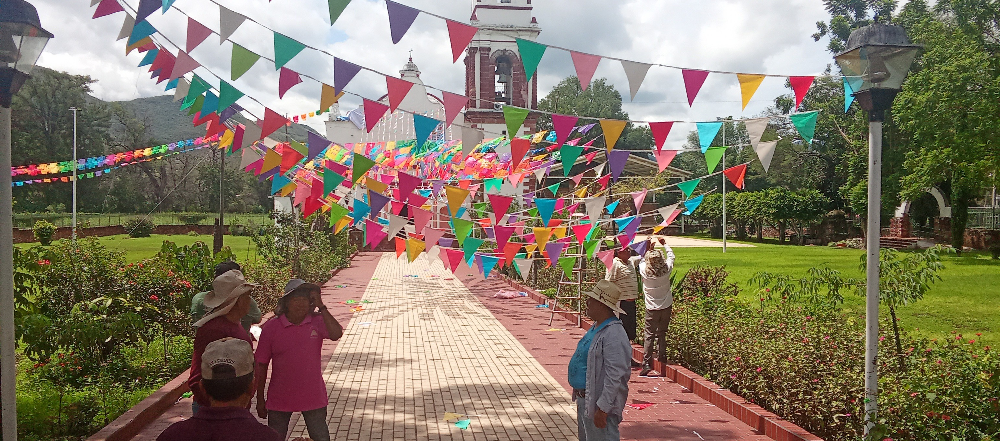

Guaxolotitlán de ayer, Huajolotitlán de hoy
"Hoy sembramos la semilla, una bien la otra mal; una entre piedras buenas, otra entre pedregal, en terrenos preparados, una parte se sembró, otra parte infructuosa, entre piedras se quedó"
Santiago Huajolotitlán es un lugar lleno de historia, cultura y tradiciones que han pasado de generación en generación. Ubicado en el corazón de Oaxaca, este pueblo destaca por la calidez de su gente, sus paisajes naturales y sus costumbres que mantienen viva su identidad. Conocido como “Guaxolotitlán de ayer, Huajolotitlán de hoy”, esta comunidad representa la unión entre el pasado y el presente, conservando sus raíces mientras avanza con el paso del tiempo. Sus festividades, gastronomía, tradiciones religiosas y atractivos turísticos hacen de este lugar un sitio especial para conocer y valorar. Cada rincón de Santiago Huajolotitlán cuenta una historia y refleja el orgullo de su comunidad.
